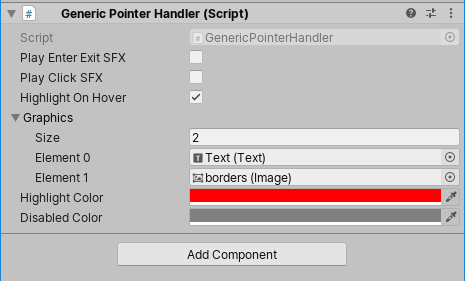

Table of Contents
* Generic Pointer Handler
* Generic Pointer Handler Example
* Screencapper
Generic Pointer Handler
A generic class that implements Unity pointer events. I reuse this for almost all interactable graphics across Project Rögue and Stellar Winds, aswell as in other projects.
using UnityEngine;
using UnityEngine.UI;
using UnityEngine.EventSystems;
using System;
public class GenericPointerHandler : MonoBehaviour, IPointerEnterHandler, IPointerDownHandler, IPointerExitHandler
{
Action _onEnter;
Action _onLeftDown;
Action _onScrollDown;
Action _onRightDown;
Action _onExit;
bool _isInteractable = true;
[SerializeField]bool _playEnterExitSFX;
[SerializeField]bool _playClickSFX;
[SerializeField]bool _highlightOnHover = false;
[SerializeField]Graphic[] _graphics;
[SerializeField]Color _highlightColor = Color.white;
[SerializeField]Color _disabledColor = Color.gray;
Color[] _graphicColors;
public void Initialize(Action onEnter = null, Action onLeftDown = null, Action onScrollDown = null, Action onRightDown = null, Action onExit = null)
{
_onEnter = onEnter;
_onLeftDown = onLeftDown;
_onScrollDown = onScrollDown;
_onRightDown = onRightDown;
_onExit = onExit;
if (_highlightOnHover)
{
_graphicColors = new Color[_graphics.Length];
for (int i = 0; i < _graphics.Length; i++)
_graphicColors[i] = _graphics[i].color;
}
}
public void OnPointerEnter(PointerEventData eventData)
{
if (_playEnterExitSFX)
UIAudioManager.Play(UISoundType.EnterExit);
if (_highlightOnHover)
ApplyColor();
_onEnter?.Invoke();
}
public void OnPointerDown(PointerEventData eventData)
{
if (!_isInteractable)
return;
switch (eventData.button)
{
case PointerEventData.InputButton.Left:
_onLeftDown?.Invoke();
break;
case PointerEventData.InputButton.Right:
_onRightDown?.Invoke();
break;
case PointerEventData.InputButton.Middle:
_onScrollDown?.Invoke();
break;
default:
break;
}
if (_playClickSFX)
UIAudioManager.Play(UISoundType.Click);
}
public void OnPointerExit(PointerEventData eventData)
{
if (_playEnterExitSFX)
UIAudioManager.Play(UISoundType.EnterExit);
if (_highlightOnHover)
ResetColors();
_onExit?.Invoke();
}
void ApplyColor()
{
for (int i = 0; i < _graphics.Length; i++)
_graphics[i].color = _highlightColor;
}
void ResetColors()
{
for (int i = 0; i < _graphics.Length; i++)
_graphics[i].color = _isInteractable ? _graphicColors[i] : _disabledColor;
}
public void Invoke(PointerEventData.InputButton button)
{
switch (button)
{
case PointerEventData.InputButton.Left:
_onLeftDown?.Invoke();
break;
case PointerEventData.InputButton.Right:
_onRightDown?.Invoke();
break;
case PointerEventData.InputButton.Middle:
_onScrollDown?.Invoke();
break;
default:
return;
}
}
public void SetInteractable(bool interactable)
{
_isInteractable = interactable;
for (int i = 0; i < _graphics.Length; i++)
_graphics[i].color = _isInteractable ? _graphics[i].color : _disabledColor;
}
}
Generic Pointer Handler Example
Example case of a GenericPointerHandler being initialized showing how well it works with lambda-statements.
Here being used inside a for-loop to setup the equipment mangement UI window.
g.GetComponent().Initialize(
() => Tooltip.Open(item.ToTooltip()),
() => {
if (item is Equipable e)
{
if (_data.GetEquipment(e.slot) != null)
{
Player.storage.Add(_data.GetEquipment(e.slot));
_data.Unequip(e.slot);
}
_data.SetEquipment(e);
}
Player.storage.Remove(item);
Tooltip.Close();
UpdateStorage();
UpdateEquipment();
},
null,
() => {
Player.storage.Remove(item);
Tooltip.Close();
UpdateStorage();
},
() => Tooltip.Close());

How the Generic Pointer Handler looks and is setup inside Unity.
Screencapper
A simple screenshot tool accessed from a custom menu, it produces 4k resolution screenshots and maps of dungeons generated in Project Rögue, see below for results.
using UnityEngine;
using UnityEditor;
using System.IO;
public class Screencapper : MonoBehaviour
{
[MenuItem("Tools/Screencapper/Screenshot")]
public static void Screenshot()
{
ScreenCapture.CaptureScreenshot(UnityEngine.SceneManagement.SceneManager.GetActiveScene().name + ".png", 4);
}
[MenuItem("Tools/Screencapper/Map")]
public static void MapShot()
{
Texture2D tex = new Texture2D(GameManager.dungeon.size, GameManager.dungeon.size);
for (int x = 0; x < GameManager.dungeon.size; x++)
for (int z = 0; z < GameManager.dungeon.size; z++)
tex.SetPixel(x, z, Grid.Get(x, z).status == TileStatus.Occupied ? Color.black : Color.gray);
tex.Apply();
byte[] bytes = tex.EncodeToPNG();
Debug.Log("Creating screenshot of map at: " + Application.persistentDataPath + "/" + tex.GetHashCode());
File.WriteAllBytes(Application.persistentDataPath + "/" + tex.GetHashCode() + ".png", bytes);
}
}
Click any of the images to enlarge.